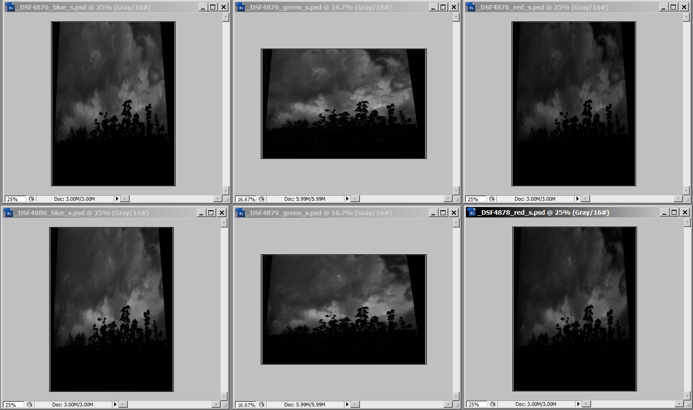
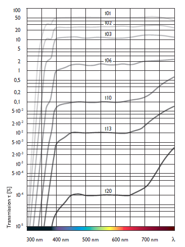

Калибровка B+W 110 ND 3.0 фильтра с коеффициентом поглощения равным 10 стопам выполнена путем фотографирования с фильтром и без него и подбора экспозиции по примерному равенству изображений в разных цветовых каналах. Верхний ряд фотографий - это каналы без фильтра, нижний - с фильтром и различной экспозицией для разных каналов

Экспопараметры кадров:
ISO 125
Имя файла Выдержка Диафрагма Разность eV _DSF4876.RAF 1/750 5.6 без фильтра _DSF4878.RAF 1.6 5.6 -10.22882 _DSF4879.RAF 2.0 5.6 -10.55075 _DSF4880.RAF 2.5 5.6 -10.87267
Таким образом установлено, что его коеффициенты пропускания равны:
красный 10.3 стопа
зеленый 10.6 стопа
синий 10.9 стопа
Неравномерность спектральной характеристики фильтра подтверждается, как фотографической практикой, так и данными производителя:

All contents copyright © vgrin, first published April 28, 2012. Ver 1.00, April 28, 2012